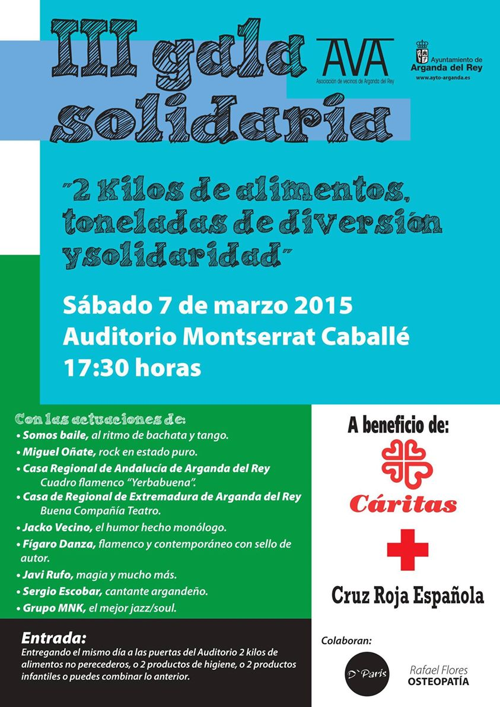

La Asociación de Vecinos de Arganda del Rey (AVA) en colaboración con el Ayuntamiento de nuestra localidad, y dentro de los actos programados desde el Consejo de la Mujer de Arganda del Rey, os invita a acudir a la entrega del “Premio Mujer de Arganda” en la que ya es su Décima Edición el próximo día 28 de Marzo a las 13:00h en el Centro Integrado de la Poveda.
El acto consistirá en el homenaje al Colectivo Premiado, la UNIDAD DE SEGURIDAD CIUDADANA SECCIÓN APOYO A MUJER DE POLICÍA LOCAL (UNIDAD DE MUJER DE ARGANDA DEL REY) dada su extraordinaria labor en la asistencia, seguimiento, acompañamiento, asesoramiento y actuación integral en pro de las mujeres víctimas de violencia de género, así como por el trabajo que realiza para erradicación de esta lacra social por medio de actuaciones formativas y educacionales. Esta Unidad desde su creación se ha implicado hasta el extremo no solo en hacer lo que su trabajo requería si no mucho más, consiguiendo generar en las víctimas de violencia machista seguridad, confianza, comprensión, fuerza..Un intachable trabajo, magistralmente realizado, que merece una continuidad. Por ello la entrega de este galardón, no solo como reconocimiento a sus méritos pasados, si no a los presentes y deseando que a los futuros.
Será un acto popular en el que además se obsequiará a todos los asistentes con un aperitivo, esperamos vuestra asistencia.
Mónica García crespo Presidenta AVAEl sábado 7 de marzo a las 17.30 horas en el Auditorio Monserrat Caballé, la Asociación de Vecinos de Arganda llevará a cabo en colaboración con el ayuntamiento de Arganda la III Gala Solidaria «Kilos de Ilusión». Objetivo conseguir la mayor cantidad de alimentos no perecederos, productos de higiene e infantiles posibles, a favor de Cáritas y Cruz Roja Arganda. A cambio, os ofrecemos un espectáculo fantástico de la mano de los mejores profesionales, música, danza, teatro, magia, monólogos..No os lo perdáis para disfrutar del colosal espectáculo solo tenéis que acudir ese mismo día con dos alimentos no perecederos, o dos productos infantiles o 2 productos de higiene, o una combinación de dos productos de las anteriores categorías, al Monserat caballé y os haremos entrega de vuestra entrada. Premiamos vuestra solidaridad con una gala variada, rebosante de talentos, con grandes profesionales, divertida y os aseguramos que única. No faltéis, disfrutaréis de una tarde de sábado inolvidable y ayudaréis a las familias de Arganda que más lo necesitan.
OS ESPERAMOS
